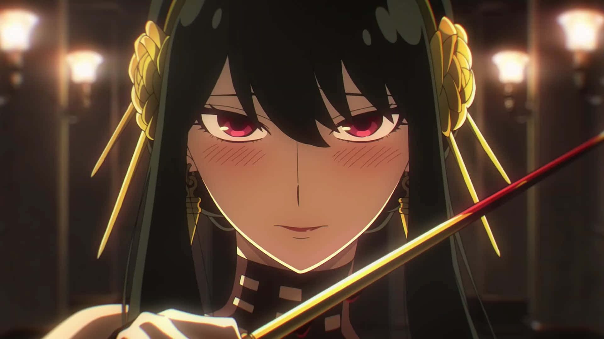
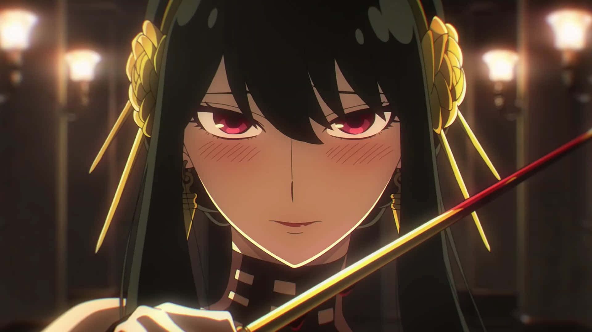

Loid Forger
Loid Forger, Um dos protagonistas do anime, Loid descartou seu passado para trabalhar para seu país como um espião disfarçado que atua sob o codinome "Twilight". Para sua missão atual, ele se casa com Yor Briar e se torna pai adotivo de Anya Forger.
Yor Briar
Yor forger, nascida Briar, também leva uma vida secreta como uma assassina com o codinome Thorn Princess. Ela e Loid Forger se casam para cumprir seus objetivos separados, com Yor se tornando a mãe adotiva de Anya Forger.
Anya
Anya, é uma telepata cujas habilidades foram criadas em um experimento conduzido por uma organização desconhecida. Desde que foi adotada, ela queria ir aonde quer que Loid fosse na esperança de ver as coisas de espionagem que ela sempre vê na TV.
Caraxes
Caraxes, também chamado de Wyrm de Sangue e Verme Sangrento, foi o dragão montado pelo Príncipe Aemon Targaryen durante o reinado do Rei Jaehaerys I Targaryen e, mais tarde, pelo Príncipe Daemon Targaryen.
Seasmoke
Seasmoke era um dragão cinza-claro. Era grande o bastante para combate durante a dança, mas ainda um jovem dragão, e mais ágil no ar do que seus irmãos mais velhos.
Vermax
Vermax foi o dragão montado pelo príncipe Jacaerys Velaryon. Ele prosperava e crescia a cada ano. O dragão ficou mal-humorado quando próximo de neve, gelo e frio.A cor de Vermax não é descrita nos livros.
Vhagar
Vhagar foi uma dragão-fêmea montada por Visenya durante a Conquista, ao lado do Balerion de Aegon o Conquistador e o Meraxes de sua irmã Rhaenys.